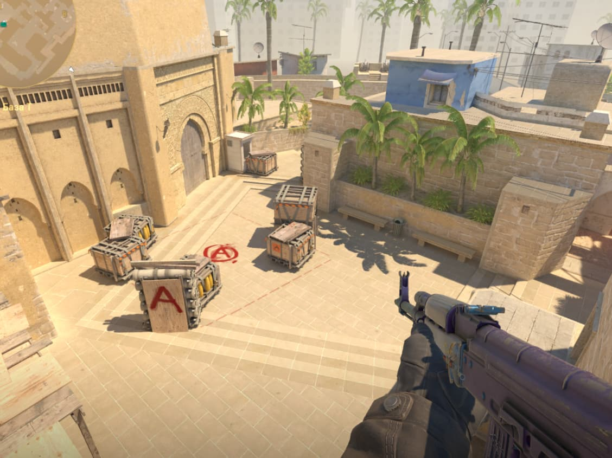
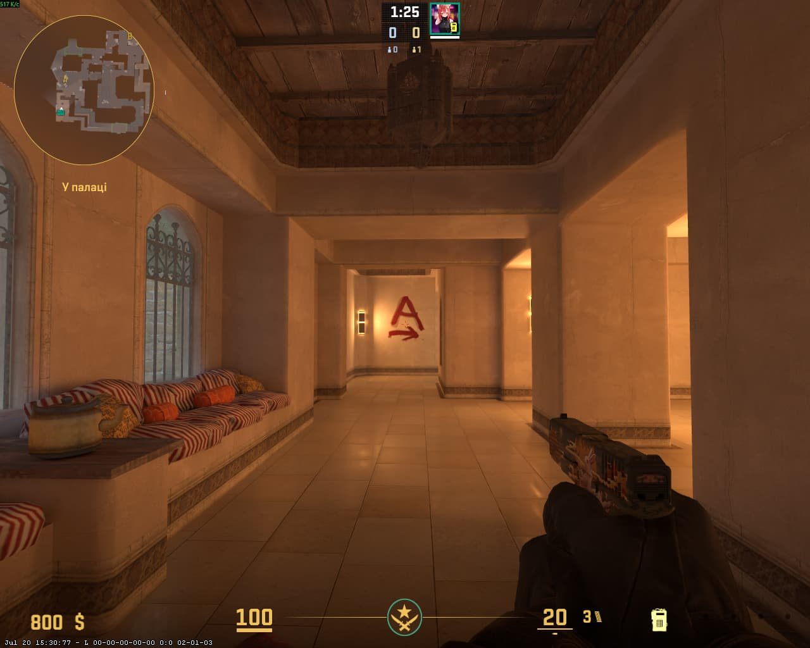
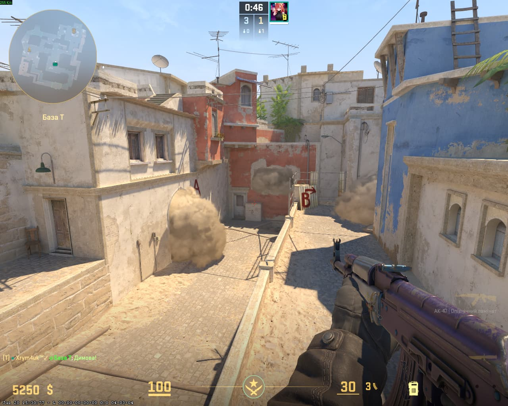

← НАЗАД
MIRAGE — ПОЗИЦІЇ (T)
📍
Порада для телефонів:
Щоб бачити сторінку точно так само, як на комп'ютері, відкрий меню браузера (3 крапки) та постав галочку «Версія для комп'ютера».

Розкид A site

Розкид Palace (Палац)

Розкид Mid